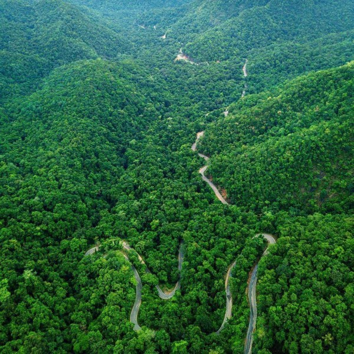

|  |
The Maredumilli Forests of East Godavari District are having rich biodiversity and the area is having semi evergreen forests with undulating terrain, which forms part of the Eastern Ghats.T he Maredumilli Community Conservation & Eco Tourism Area is situated on Maredumilli – Bhadrachalam road, nearly 4 Km. away from Maredumilli village. The area is having many streams flowing over the undulating rocks in the deep woods and any visitor feel thrilling experience in the Nature.
The Eco-tourism project is managed by the local indigenous tribal community of Valamuru, Somireddypalem and Valmeekipeta Vana Samrkshana Samithi people with the active support of Andhra Pradesh Forest Department. The project was successfully completed in a short span of time due to the commitment of the highly motivated community participation coupled with the timely financial assistance from the World Bank aided Andhra Pradesh Community Forest Management Project. This also provided unique opportunity to the native ethnic community to spread the message of conservation to the masses.The jungle star campsite is located adjoining the Valamuru river with the stream flowing on 3 sides overlooking the Vali-Sugriva Konda which is believed to be the battle ground of the Vali-Sugriva during the Ramayana period. The remarkable variation of the battleground with the presence of grass land, encircled by forests on the other hillocks makes the visitor to pay attention on the legendary story.
As a part of Tourism Development Maredumilli Forest Rest House was constructed in the year 1914, the Forest Rest House is in Maredumilli Village with all facilities. The name of the rest house is Abhayaranya Forest Rest House. Suits are available here for stay of Tourists. |
 |
Visakhapatnam, also commonly known as Vizag, is one of the oldest port cities in the country. Situated in the heart of Andhra Pradesh, Visakhapatnam is known for its picturesque beaches and serene landscape, as well as a rich cultural past, which makes it an ideal spot for a fantastic coastal vacation. The port of Visakhapatnam is renowned for being home to the oldest shipyard in all of India, and with a plethora of manmade wonders and natural spectacles, Visakhapatnam is a must-visit tourist destination in South India.
You simply cannot go to a coastal city like Visakhapatnam and not see its beaches. Vizag is dotted with many beaches along its coastline, with the most famous one being the Yarada Beach. One of the most stunning places to see in all of Visakhapatnam, Yarada beach is surrounded by majestic hills on three sides, and by the Bay of Bengal on the other side. One of the best things about Vizag’s beaches is that they are a lot cleaner and a lot less crowded than other famous beaches along the Indian coastline, and Yarada beach is no exception. It is the perfect place to sit back on the golden sands and witness a marvellous sunrise or sunset. Located a short distance away from Visakhapatnam, Araku Valley is one of the prime attractions of Vizag. Situated at a lofty 910 metres above sea level, Araku Valley is a hill station replete with gushing waterfalls, crystal clear streams, and lush green gardens. The valley is inhabited by a number of tribes who have strongly held on to their vibrant traditions and culture, refusing to let themselves be taken over by commercialization. Araku Valley offers some challenging trekking trails which you can avail if you’re up for it.
|